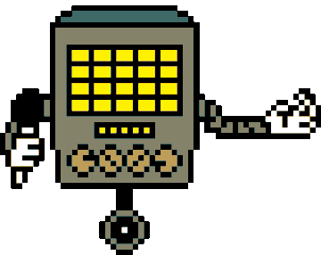
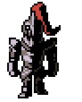
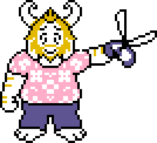
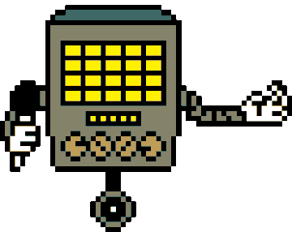
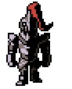
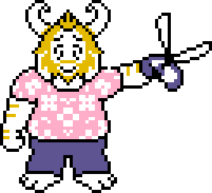

Niels Leenheer
Hij maakt kassasystemen
Medeoprichter van salonhub
Project fugu:
Window management
webHID
WebBluetooth
WebUSB
WebSerial
Prototype over de hele wereld laten zien bij verschillende googleIO evenementen
Demo:
Hij connect de computer met een barcode scanner en een schermpje waar je de prijs ziet.
Het is een kassa. Er komt daadwerkelijk een bon uit wow
Een kassa met web technologie, het werkt
10 jaar mee bezig
Bonnenprinter:
Project fugu laat ons praten met bonnenprinters, maar we moeten wel eerst hun taal leren
Code taal uit de jaren 70. Heel ingewikkeld om iets heel makkelijk te doen.
Internationalisatie voor Unicode
Hoe kunnen we computers verkopen aan de rest van de wereld zonder dat al te veel moeite te hoeven te doen en we de complexiteit grotendeels kunnen negeren.
Codepatches zijn voor andere tekens.
Wij gebruiken westers Europees. Printers staan hier standaard op.
Er zijn heel veel codepatch voor alle talen.
Hij heeft zijn eigen codepageEncoder gemaakt. Voor alle codepatches
Maar elke printer is anders, sommige hebben minder codepages en andere meer.
En hoe maak je afbeeldingen?
Bill Atkinson, maker van Quickdraw, macpaint en hypercard.
Heeft een API gemaakt om alle afbeeldingen om te zetten in zwarte puntjes
Starprnt is een ander ding voor printers
Beetje zoals de eerste, maar alles is anders.
Hij heeft een verslaving aan bonnenprinters
ReceiptPrinterEncoder support heel veel, maar nog steeds niet alles.
Het klantenscherm
Welke taal spreken klantenscherm? Esc/pos
Denk je, ze zijn er blij mee, maar nee want het zijn geen printers.
Waarom? 1980, door splitskabels.
Barcodescanner
Barcoddescanners zijn simpelweg een toetsenbord.
Ze lezen een barcode letter voor letter, beetje langzaam. Is een ding voor.
Maar wanneer stopt een regel? Daar is ook een ding voor
Maar in de kassa’s gebruiken we geen barcodes.
Er zijn heel veel barcodes en die moeten allemaal leiden naar de: Global Trade Identification Number.
Maar barcodes verdwijnen over 2 jaar, als het goed is.
Door een QR code.
Er kan daar heel veel informatie in.
Behalve als je ikea bent, want dan doe je het weer net anders. Maar wij geen ikea dus dat is niet ons probleem.
Heel veel API’s voor barcode scanners, alles eigenlijk.
Herhaling: 10 jaar aan werk
En salunhub is ook nog is opensource.
Met heel veel dingen denk ik niet na over hoe het werkt. Het werkt toch gewoon? Maar dan heb je nu Niels Leenheer die langskomt en gaat praten over hoe kassa systemen werken. En ik kan het heel kort zeggen, ik heb respect voor die man. De technologie stamt af uit de jaren 70 en het wordt nog steeds gebruikt, het is nog steeds niet gemoderniseerd. Om de verschillende onderdelen samen te laten werken is echt een gedoe, want het ene systeem werkt niet met het andere systeem samen. Elke keer als hij zei “het werkt, maar dan” voelde ik een stukje van mijn ziel afsterven, dat het zo’n gedoe is om het te laten werken is echt belachelijk. Als barcodes daadwerkelijk verdwijnen over 2 jaar, weet ik waardoor het komt. En ik ben nu eigenlijk ook wel een beetje benieuwd hoe andere oude technologie werkt. Waarom wordt het een wel gemoderniseerd, maar het andere niet. Conclusie: ik hoop dat ik nooit zo iets hoef te doen voor mijn werk, want dat lijkt me echt mentaal slopend.